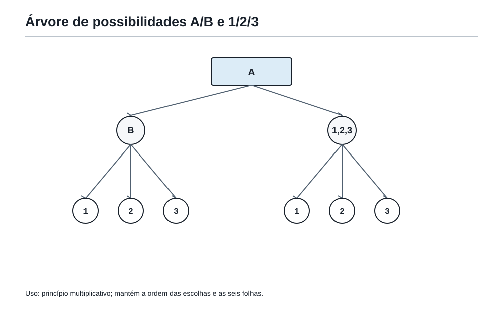
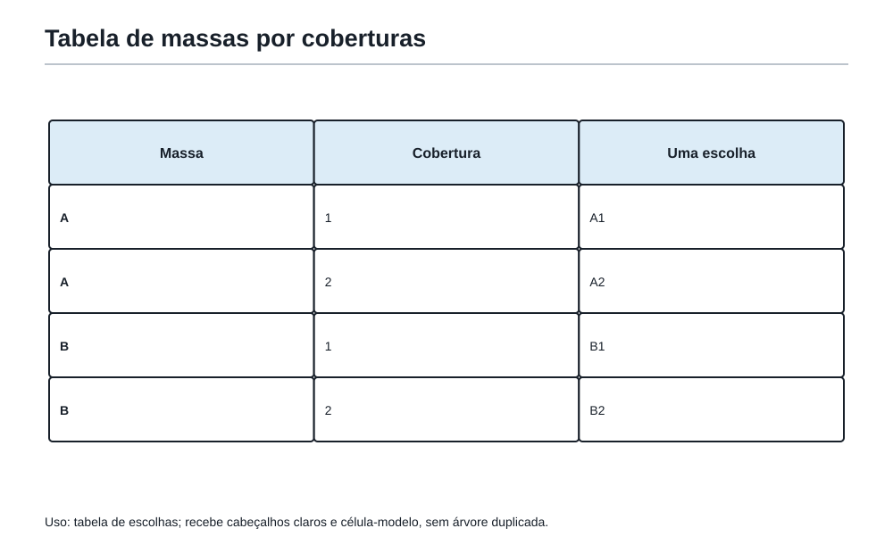
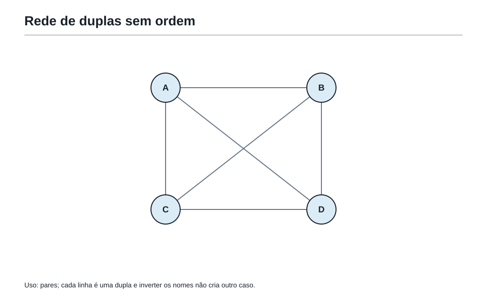
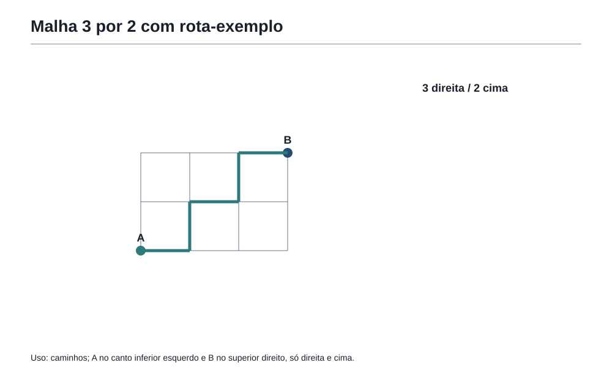
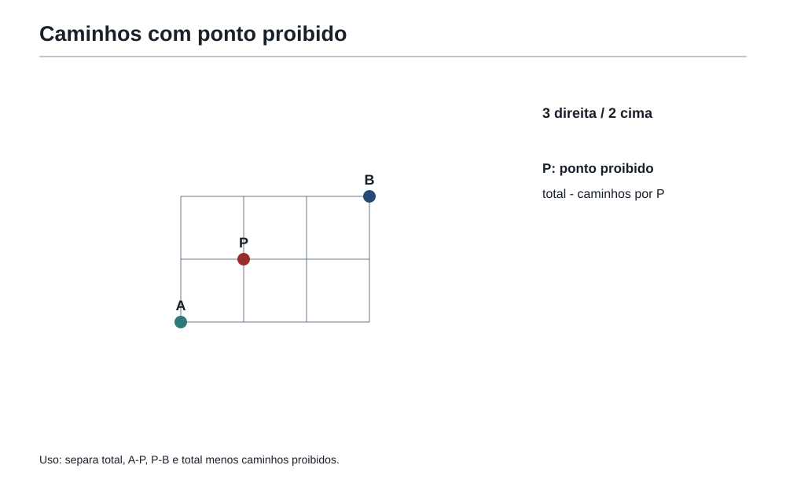

A arte de contar sem se perder
1. Depois das figuras compostas
Na sala anterior, Felipe aprendeu que uma figura difícil pode ser transformada.
Às vezes é preciso dividir.
Às vezes é preciso completar.
Às vezes é preciso subtrair buracos.
Às vezes é preciso recompor pedaços.
No fim da aula, o Professor da Academia desenhou uma malha quadriculada no quadro. Havia um ponto no canto inferior esquerdo e outro no canto superior direito.
— Para chegar daqui até ali — disse o Professor — você só pode andar para a direita ou para cima.
Felipe olhou para o desenho.
— Parece geometria.
A coruja, pousada sobre a Mochila do Matemático, abriu um olho.
— Parece. Mas agora a pergunta mudou.
O Professor sorriu.
— Antes perguntávamos: “qual é a área?” ou “qual é o perímetro?”. Agora perguntamos: quantos caminhos existem?
Essa pergunta abre uma nova sala da Academia.
A sala da contagem organizada.
2. Contar não é apenas dizer “um, dois, três”
Quando os objetos estão na mesa, contar parece simples.
Se há cinco medalhas sobre a mesa, contamos:
1, 2, 3, 4, 5.
Mas muitos problemas olímpicos não mostram todos os objetos.
Eles mostram possibilidades.
Por exemplo:
- quantas senhas podem ser formadas;
- quantos caminhos levam de um ponto a outro;
- quantas duplas podem ser escolhidas;
- quantos uniformes diferentes uma equipe pode usar;
- quantas maneiras existem de organizar uma fila;
- quantos casos precisam ser analisados em um problema de lógica.
Nesses casos, a lista existe, mas está invisível.
A tarefa do matemático não é sair escrevendo tudo sem controle.
A tarefa é construir uma forma de contar sem esquecer nenhum caso e sem repetir o mesmo caso duas vezes.
Essa é a combinatória que interessa aqui.
Não começa com fórmula.
Começa com uma pergunta:
Que escolhas estão sendo feitas?
3. Quando aparece o “ou”
O Professor colocou três sucos sobre a mesa da Academia:
- laranja;
- uva;
- maracujá.
Depois colocou dois bolos:
- chocolate;
- milho.
E perguntou:
— Felipe pode escolher um suco ou um bolo. Quantas escolhas diferentes ele tem?
Felipe contou:
3 sucos e 2 bolos.
Total: 5 escolhas.
Aqui a palavra importante é ou.
Ele escolhe um suco ou escolhe um bolo. As possibilidades estão em grupos separados.
Então somamos:
3 + 2 = 5
O nome pode aparecer depois:
Quando as escolhas são alternativas separadas, usamos o princípio aditivo.
Mas a ideia veio primeiro:
Se posso escolher isto ou aquilo, e os grupos não se misturam, conto um grupo e depois somo o outro.
4. A armadilha da repetição
A coruja empurrou uma placa para o centro da mesa.
Na placa estava escrito:
Na turma da Academia, 8 alunos gostam de geometria e 6 gostam de lógica. Quantos alunos gostam de geometria ou lógica?
Felipe começou:
— 8 + 6 = 14.
A coruja não disse nada. Só apontou para a palavra ou.
O Professor completou:
— A palavra “ou” ajuda, mas não resolve sozinha. Falta uma pergunta.
Felipe pensou.
— Pode ter aluno que gosta das duas coisas?
— Exatamente.
Se 3 alunos gostam de geometria e de lógica, eles foram contados duas vezes na soma 8 + 6.
Então a contagem correta é:
8 + 6 - 3 = 11
A primeira lição da contagem organizada é esta:
Antes de somar grupos, verifique se eles se misturam.
Se os grupos não se sobrepõem, somar é seguro.
Se os grupos se sobrepõem, é preciso retirar o que foi contado duas vezes.
A mesma ideia já apareceu nas figuras compostas: quando duas faixas se sobrepõem, a região comum não pode ser contada duas vezes.
Na geometria, a armadilha era área duplicada.
Na combinatória, a armadilha é caso duplicado.
5. Quando aparece o “e depois”
Agora o Professor mudou a mesa.
Felipe deve escolher:
- uma camiseta entre 4 cores;
- depois uma bermuda entre 3 cores.
Quantos uniformes diferentes ele pode formar?
Felipe começou a imaginar:
- camiseta azul com bermuda preta;
- camiseta azul com bermuda branca;
- camiseta azul com bermuda cinza;
- camiseta verde com bermuda preta;
- camiseta verde com bermuda branca;
- camiseta verde com bermuda cinza;
- e assim por diante.
Para cada camiseta, há 3 bermudas possíveis.
Como há 4 camisetas:
4 × 3 = 12
Aqui a ideia importante não é “ou”.
É e depois.
Escolhe uma camiseta e depois uma bermuda.
O nome pode aparecer depois:
Quando há escolhas em sequência, usamos o princípio multiplicativo.
Mas a ideia é mais simples:
Se cada primeira escolha abre o mesmo número de segundas escolhas, multiplicamos.
6. Soma ou multiplicação?
A Academia colocou duas portas diante de Felipe.
Na primeira porta estava escrito:
Escolha um lanche: sanduíche, tapioca ou pastel.
Escolha uma bebida: suco ou água.
Na segunda porta estava escrito:
Escolha um lanche ou uma bebida.
As duas situações usam as mesmas quantidades:
- 3 lanches;
- 2 bebidas.
Mas as perguntas são diferentes.
Na primeira porta, Felipe escolhe um lanche e depois uma bebida.
3 × 2 = 6
Na segunda porta, Felipe escolhe um lanche ou uma bebida.
3 + 2 = 5
A conta não nasce dos números.
Nasce da história.
Por isso a Mochila do Matemático ganha uma ferramenta importante:
Identificar se as escolhas são alternativas ou sequenciais.
Alternativas separadas pedem soma.
Escolhas em sequência pedem multiplicação.
7. A árvore de possibilidades
Quando as escolhas são poucas, podemos enxergar tudo em uma árvore.
Imagine uma senha com duas posições.
A primeira posição pode ser A ou B.
A segunda posição pode ser 1, 2 ou 3.
As possibilidades são:
- A1;
- A2;
- A3;
- B1;
- B2;
- B3.

A árvore mostra a multiplicação sem precisar decorar:
Para A, há 3 finais.
Para B, há 3 finais.
Total:
2 × 3 = 6
A árvore também ajuda a evitar esquecimento.
Se um galho termina cedo, vemos que algo está faltando.
Se o mesmo final aparece em dois lugares, percebemos uma repetição.
Árvore não é enfeite.
É organização.
8. Tabelas de escolhas
Às vezes, uma tabela é mais limpa do que uma árvore.
Imagine que a Academia tem 3 tipos de massa:
- fina;
- média;
- grossa.
E 4 coberturas:
- queijo;
- tomate;
- frango;
- milho.
Cada pizza é formada por uma massa e uma cobertura.
Podemos montar uma tabela:
| Massa \ Cobertura | Queijo | Tomate | Frango | Milho |
|---|---|---|---|---|
| Fina | 1 | 1 | 1 | 1 |
| Média | 1 | 1 | 1 | 1 |
| Grossa | 1 | 1 | 1 | 1 |
A tabela tem 3 linhas e 4 colunas.
Total:
3 × 4 = 12

A tabela é boa quando há dois conjuntos de escolhas.
A árvore é boa quando há escolhas em etapas.
As duas ferramentas dizem a mesma coisa:
Contar bem é organizar antes de calcular.
9. Quando a ordem importa
O Professor escreveu no quadro:
Com os algarismos 1, 2 e 3, quantas senhas de dois algarismos diferentes podem ser formadas?
Felipe pensou em 12 e 21.
— São diferentes? — perguntou a coruja.
— Sim. Numa senha, trocar a ordem muda a senha.
Então a ordem importa.
Para a primeira posição, há 3 escolhas: 1, 2 ou 3.
Depois de escolher a primeira, sobram 2 escolhas para a segunda, porque os algarismos devem ser diferentes.
Total:
3 × 2 = 6
As senhas são:
12, 13, 21, 23, 31, 32
Aqui aparecem duas perguntas essenciais:
- A ordem muda o resultado?
- A repetição é permitida?
Neste problema:
- ordem importa;
- repetição não é permitida.
Por isso o número de escolhas diminui na segunda posição.
10. Quando a repetição é permitida
Agora a pergunta muda:
Com os algarismos 1, 2 e 3, quantas senhas de dois algarismos podem ser formadas, permitindo repetição?
Agora 11 é permitido.
22 também.
33 também.
Para a primeira posição, há 3 escolhas.
Para a segunda posição, ainda há 3 escolhas.
Total:
3 × 3 = 9
As possibilidades são:
11, 12, 13, 21, 22, 23, 31, 32, 33
O erro clássico é usar a conta do problema anterior sem perceber que a regra mudou.
Na combinatória, uma palavra pequena muda tudo.
“Diferentes” muda tudo.
“Podem repetir” muda tudo.
“Sem repetir” muda tudo.
“Ordem não importa” muda tudo.
A leitura exata volta para a Mochila.
11. Quando a ordem não importa

O Professor chamou quatro alunos imaginários:
Ana, Bruno, Caio e Dora.
A pergunta:
Quantas duplas podem ser formadas?
Felipe começou a listar:
- Ana e Bruno;
- Ana e Caio;
- Ana e Dora;
- Bruno e Caio;
- Bruno e Dora;
- Caio e Dora.
Total: 6 duplas.
Agora a coruja perguntou:
— Ana-Bruno e Bruno-Ana são duas duplas diferentes?
— Não. É a mesma dupla.
Se Felipe tivesse feito 4 × 3, teria contado:
- escolher a primeira pessoa: 4 opções;
- escolher a segunda: 3 opções.
Isso daria 12.
Mas cada dupla apareceria duas vezes:
Ana-Bruno e Bruno-Ana.
Caio-Dora e Dora-Caio.
Então precisamos dividir por 2:
12 ÷ 2 = 6
Essa divisão não apareceu por mágica.
Ela corrige uma contagem duplicada.
Quando a ordem não importa, mas a contagem tratou a ordem como se importasse, é preciso dividir pelo número de repetições de cada caso.
12. O torneio relâmpago
A Academia organizou um torneio com 6 estudantes.
Cada estudante joga uma partida contra cada outro estudante, uma única vez.
Quantas partidas haverá?
Uma partida é como uma dupla.
Aluno A contra aluno B é a mesma partida que aluno B contra aluno A.
Se escolhêssemos o primeiro jogador e depois o segundo, teríamos:
6 × 5 = 30
Mas cada partida foi contada duas vezes.
Então:
30 ÷ 2 = 15
Resposta: 15 partidas.
A pergunta escondida era:
Estamos contando pares sem ordem.
Essa família aparece muitas vezes na OBMEP:
- apertos de mão;
- partidas entre equipes;
- diagonais entre vértices;
- duplas de alunos;
- pares de números.
A ferramenta não é decorar todos esses casos.
É reconhecer a pergunta:
Trocar a ordem cria um caso novo ou apenas repete o mesmo caso?
13. Caminhos em malha: a ponte com a geometria
Agora o Professor voltou à malha quadriculada.
Felipe precisa sair do ponto A e chegar ao ponto B.
Para isso, só pode andar:
- para a direita;
- para cima.

Imagine que o ponto B está 3 passos à direita e 2 passos acima de A.
Todo caminho possível terá exatamente:
- 3 passos para a direita, que podemos chamar de D;
- 2 passos para cima, que podemos chamar de C.
Um caminho poderia ser:
D D C D C
Outro:
C D D C D
Outro:
D C D D C
Então um caminho virou uma sequência de letras.
A pergunta “quantos caminhos?” virou:
De quantas maneiras podemos organizar 3 letras D e 2 letras C?
Há 5 posições no total.
Precisamos escolher quais 2 posições serão ocupadas pelos passos C.
Por exemplo, se os C ficam nas posições 2 e 5:
D C D D C
A quantidade de escolhas é:
5 × 4 ÷ 2 = 10
Por quê?
Há 5 escolhas para a primeira posição do C e 4 para a segunda, mas a ordem em que escolhemos as duas posições não importa. Escolher posições 2 e 5 é o mesmo que escolher posições 5 e 2.
Então dividimos por 2.
Resposta: 10 caminhos.
O importante aqui não é a fórmula.
O importante é a transformação:
Caminhos em malha podem ser contados como sequências de passos.
14. Caminhos com obstáculo

A coruja colocou uma pedra em um ponto da malha.
— Agora os caminhos não podem passar por aqui.
Imagine a mesma malha: 3 passos para a direita e 2 para cima.
Sem obstáculo, havia 10 caminhos.
Agora suponha que o ponto proibido P fica depois de 1 passo à direita e 1 passo para cima.
Para contar os caminhos proibidos, fazemos duas etapas:
- caminhos de A até P;
- caminhos de P até B.
De A até P, é preciso dar:
- 1 passo D;
- 1 passo C.
Há 2 caminhos:
D C ou C D.
De P até B, ainda faltam:
- 2 passos D;
- 1 passo C.
Há 3 caminhos, pois o C pode ocupar a primeira, segunda ou terceira posição:
C D D, D C D, D D C.
Então os caminhos que passam por P são:
2 × 3 = 6
Como o total era 10, os caminhos permitidos são:
10 - 6 = 4
Resposta: 4 caminhos.
A estratégia foi:
- contar tudo;
- contar os proibidos;
- subtrair.
A mesma ideia apareceu nas áreas:
parede total menos janela.
painel total menos buraco.
caminhos totais menos caminhos proibidos.
A matemática gosta de reutilizar ideias em salas diferentes.
15. O problema das bandeiras
A Academia tem bandeiras feitas com três faixas verticais.
Cada faixa pode ser pintada de uma das cores:
- azul;
- verde;
- amarelo.
A regra é:
Faixas vizinhas não podem ter a mesma cor.
Quantas bandeiras diferentes podem ser feitas?
Vamos escolher da esquerda para a direita.
Primeira faixa: 3 escolhas.
Segunda faixa: não pode repetir a primeira, então há 2 escolhas.
Terceira faixa: não pode repetir a segunda, mas pode ser igual à primeira. Então há 2 escolhas.
Total:
3 × 2 × 2 = 12
O cuidado do problema está na palavra vizinhas.
Ela não diz que todas as faixas precisam ter cores diferentes.
Ela diz apenas que faixas lado a lado não podem repetir.
Então azul-verde-azul é permitido.
Esse é um exemplo de leitura exata dentro da contagem.
A conta certa nasce da regra certa.
OBMEP16. Problema em estilo OBMEP — Os uniformes da equipe
A equipe da Academia vai escolher um uniforme formado por uma camiseta e uma faixa.
Há 5 cores de camiseta e 4 cores de faixa.
A faixa não pode ter a mesma cor da camiseta quando essa cor existir entre as faixas.
Todas as 4 cores de faixa também existem entre as cores de camiseta.
Quantos uniformes diferentes podem ser formados?
Pense alguns instantes antes de seguir.
Ver solução
Solução comentada
Se não houvesse restrição, seriam:
5 × 4 = 20
Mas há uniformes proibidos: aqueles em que a faixa tem a mesma cor da camiseta.
Como existem 4 cores de faixa, há 4 coincidências proibidas.
Então:
20 - 4 = 16
Resposta: 16 uniformes.
Outra forma:
- para cada uma das 4 camisetas que também têm cor de faixa, sobram 3 faixas permitidas;
- para a camiseta cuja cor não aparece nas faixas, há 4 faixas possíveis.
Total:
4 × 3 + 1 × 4 = 12 + 4 = 16
As duas estratégias chegam ao mesmo resultado.
Uma contou tudo e retirou os proibidos.
A outra separou os casos.
OBMEP17. Problema em estilo OBMEP — A senha da sala secreta
A senha da sala secreta tem três algarismos.
Ela deve ser formada com os algarismos 1, 2, 3, 4 e 5.
Nenhum algarismo pode se repetir.
O primeiro algarismo deve ser ímpar.
Quantas senhas podem ser formadas?
Ver solução
Solução comentada
Os algarismos ímpares disponíveis são:
1, 3, 5.
Então há 3 escolhas para o primeiro algarismo.
Depois disso, restam 4 algarismos para a segunda posição.
Depois, restam 3 algarismos para a terceira posição.
Total:
3 × 4 × 3 = 36
Resposta: 36 senhas.
A ordem importa porque é senha.
A repetição não é permitida porque o enunciado diz que nenhum algarismo pode se repetir.
A restrição do primeiro algarismo deve ser tratada antes das outras posições.
OBMEP18. Problema em estilo OBMEP — As duplas de treino
Em uma turma há 8 estudantes. O Professor quer formar uma dupla para resolver um problema no quadro.
Quantas duplas diferentes podem ser formadas?
Ver solução
Solução comentada
Se escolhêssemos uma primeira pessoa e depois uma segunda, teríamos:
8 × 7 = 56
Mas cada dupla seria contada duas vezes.
Por exemplo:
Ana-Bruno e Bruno-Ana são a mesma dupla.
Então:
56 ÷ 2 = 28
Resposta: 28 duplas.
A pergunta escondida é:
A ordem importa?
Aqui não importa.
OBMEP19. Problema em estilo OBMEP — Caminhos até o pátio
Felipe está em uma malha quadriculada. Para chegar ao pátio da Academia, ele precisa dar exatamente 4 passos para a direita e 2 passos para cima.
Ele só pode andar para a direita ou para cima.
Quantos caminhos diferentes existem?
Ver solução
Solução comentada
Cada caminho terá 6 passos no total:
- 4 passos D;
- 2 passos C.
Basta escolher em quais 2 das 6 posições ficarão os passos C.
Número de escolhas:
6 × 5 ÷ 2 = 15
Resposta: 15 caminhos.
Também poderíamos escolher as posições dos 4 passos D. Daria o mesmo resultado.
O ponto central é transformar caminho em sequência de passos.
OBMEP20. Problema em estilo OBMEP — O torneio relâmpago
Sete estudantes participam de um torneio de xadrez. Cada estudante joga exatamente uma partida contra cada outro estudante.
Quantas partidas serão jogadas?
Ver solução
Solução comentada
Uma partida é um par de estudantes sem ordem.
Se a ordem importasse, teríamos:
7 × 6 = 42
Mas cada partida foi contada duas vezes:
- A contra B;
- B contra A.
Então:
42 ÷ 2 = 21
Resposta: 21 partidas.
OBMEP21. Problema em estilo OBMEP — A rota com ponto proibido
Em uma malha, Felipe precisa sair de A e chegar a B andando apenas para a direita ou para cima.
De A até B são necessários 3 passos para a direita e 3 passos para cima.
Há um ponto proibido P localizado exatamente depois de 1 passo para a direita e 2 passos para cima a partir de A.
Quantos caminhos de A até B não passam por P?
Ver solução
Solução comentada
Primeiro contamos todos os caminhos de A até B.
São 6 passos no total:
- 3 D;
- 3 C.
Escolhemos as posições dos 3 passos C entre 6 posições.
6 × 5 × 4 ÷ (3 × 2 × 1) = 20
Total sem restrição: 20 caminhos.
Agora contamos os caminhos que passam por P.
De A até P:
- 1 D;
- 2 C.
São 3 passos. Basta escolher a posição do D, ou as posições dos dois C:
3 caminhos.
De P até B:
Como no total eram 3 D e 3 C, e até P já usamos 1 D e 2 C, faltam:
- 2 D;
- 1 C.
Há 3 caminhos.
Então os caminhos que passam por P são:
3 × 3 = 9
Caminhos permitidos:
20 - 9 = 11
Resposta: 11 caminhos.
A estratégia foi contar tudo e retirar o proibido.
Oficina22. Oficina Olímpica 8 — Contar sem esquecer nem repetir
Agora é sua vez de treinar como a Academia treina: olhando primeiro para a estrutura da escolha.
Use o caderno se quiser. Não tente apenas adivinhar a conta. Antes de calcular, responda mentalmente:
- é soma ou multiplicação?
- a ordem importa?
- a repetição é permitida?
- há casos proibidos?
- estou contando algum caso duas vezes?
Desafio 1 — O cardápio da Academia
Há 4 pratos principais e 3 sobremesas. Felipe escolherá um prato principal e uma sobremesa.
Quantas refeições diferentes podem ser formadas?
Solução:
São escolhas em sequência:
4 × 3 = 12
Resposta: 12 refeições.
Desafio 2 — Prato ou sobremesa
No mesmo cardápio, Felipe escolherá apenas um item: ou um prato principal ou uma sobremesa.
Quantas escolhas existem?
Solução:
Agora são alternativas separadas:
4 + 3 = 7
Resposta: 7 escolhas.
Desafio 3 — Senha curta
Uma senha tem dois algarismos diferentes escolhidos entre 0, 1, 2, 3 e 4. O primeiro algarismo não pode ser 0.
Quantas senhas podem ser formadas?
Solução:
Primeiro algarismo: 1, 2, 3 ou 4. Há 4 escolhas.
Depois, para o segundo algarismo, podemos usar qualquer um dos 5 algarismos exceto o primeiro já escolhido. Sobram 4 escolhas, e o 0 agora pode aparecer.
Total:
4 × 4 = 16
Resposta: 16 senhas.
Desafio 4 — Apertos de mão
Em uma reunião com 10 pessoas, cada pessoa cumprimenta cada outra pessoa exatamente uma vez.
Quantos apertos de mão acontecem?
Solução:
Escolher duas pessoas entre 10, sem ordem.
Se a ordem importasse:
10 × 9 = 90
Cada aperto foi contado duas vezes.
90 ÷ 2 = 45
Resposta: 45 apertos de mão.
Desafio 5 — Caminho simples
Em uma malha, para ir de A até B, Felipe precisa dar 2 passos para a direita e 3 passos para cima.
Quantos caminhos existem se ele só pode andar para a direita ou para cima?
Solução:
São 5 passos no total:
- 2 D;
- 3 C.
Escolhemos as posições dos 2 passos D entre 5 posições:
5 × 4 ÷ 2 = 10
Resposta: 10 caminhos.
Desafio 6 — Cores vizinhas
Uma faixa tem 4 quadrados em fila. Cada quadrado será pintado de azul, verde ou amarelo. Quadrados vizinhos não podem ter a mesma cor.
Quantas faixas diferentes podem ser pintadas?
Solução:
Primeiro quadrado: 3 escolhas.
Segundo: não pode repetir o primeiro, então 2 escolhas.
Terceiro: não pode repetir o segundo, então 2 escolhas.
Quarto: não pode repetir o terceiro, então 2 escolhas.
Total:
3 × 2 × 2 × 2 = 24
Resposta: 24 faixas.
23. As ferramentas da Mochila nesta sala
Nesta sala, a Mochila do Matemático não ganhou fórmulas para decorar. Ela ganhou perguntas para organizar a contagem.
Ferramentas retomadas e organizadas:
- Contar casos sem misturar tipos diferentes.
- Usar o princípio aditivo quando há escolhas alternativas.
- Usar o princípio multiplicativo quando há escolhas em sequência.
- Fazer árvore de possibilidades.
- Organizar escolhas em tabela.
- Verificar se a ordem importa.
- Verificar se a repetição é permitida.
- Dividir quando a contagem contou cada caso mais de uma vez.
- Transformar caminhos em sequências de passos.
- Contar tudo e retirar os casos proibidos.
- Conferir se nenhuma possibilidade foi esquecida ou repetida.
A ferramenta principal da sala talvez seja esta:
Antes de contar, descubra o que está sendo escolhido.
24. Figuras aplicadas no ponto de uso
As especificações de árvore, tabela, malhas e rede de duplas aparecem nas seções de escolha, caminhos e ordem. Cada uma organiza a contagem que o texto já pede, sem decoração adicional.
25. A frase da Academia
Contar possibilidades é construir uma lista invisível sem perder nenhum item e sem escrever o mesmo item duas vezes.
26. Pergunta para amanhã
Felipe guardou a ferramenta da contagem na Mochila.
A coruja, porém, ainda parecia inquieta.
— E quando o problema não pedir uma conta? — perguntou ela. — E quando ele vier cheio de frases, pistas, verdades, mentiras e condições?
O Professor apagou a malha do quadro e desenhou três portas.
Uma dizia: “sempre”.
Outra dizia: “nunca”.
A terceira dizia: “exatamente um”.
Felipe percebeu que a próxima sala não seria de fórmulas.
Seria de cuidado com as palavras.
Pergunta para amanhã:
Quando um problema parece não ter conta nenhuma, como a lógica encontra o caminho?